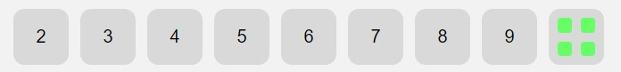
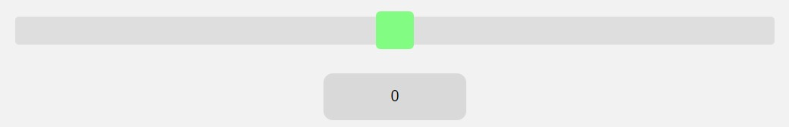
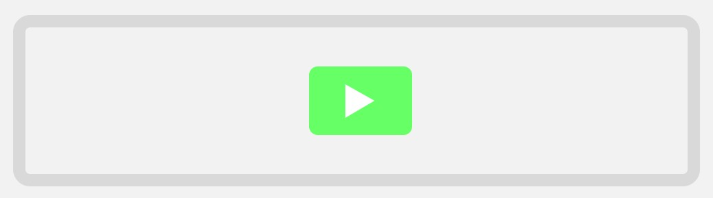
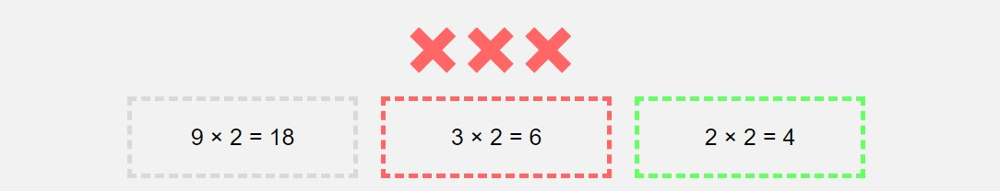
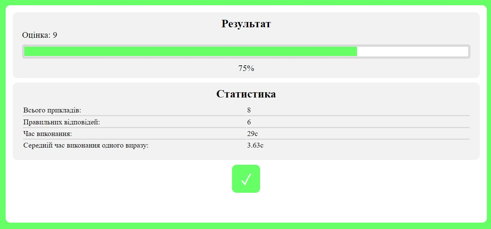
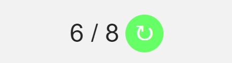

× & ÷
2
3
4
5
6
7
8
9
0
Програма використовується для покращення та закріплення знання таблички множення і ділення.
Кнопки з символами множення і ділення визначають дії, які будуть використані в прикладах. Вибрати можна відразу обидві дії.
Кнопки з цифрами визначають цифри, що будуть використовуватися в прикладах. Кнопка з чотирма квадратами вибирає всі цифри. Коли вибрані всі цифри, навпаки скасовує виділення.

Положення квадата на лінії визначає кількість прикладів, яку можна спостерігати у віконці під лінією.

Для початку тренування натисніть на зелену кнопку з трикутником або на клавішу "Enter".

Введіть в поле біля прикладу відповідь і натисніть на кнопку з зеленою стрілкою або на клавішу "Enter".
Кількість прикладів можна спостерігати у віконці під лінією.
Кількість крестиків відповідає кількості помилок. Після кожної помилки через один приклад, приклад, в якому було допущено помилку, з'являється знову. Якщо виправити помилку, прямокутник з прикладом стане зеленим, інакше — червоним.

Коли всі приклади будуть виконані, з'явиться віконце з результатами.

Для повторного тренування натисніть на круглу кнопку, показану на зображенні.
